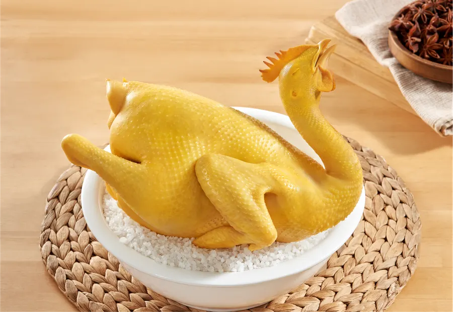
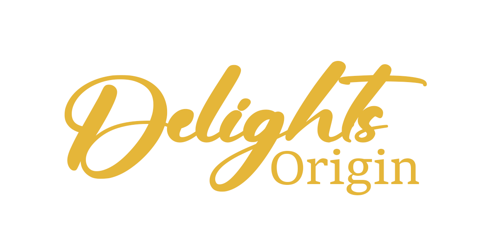
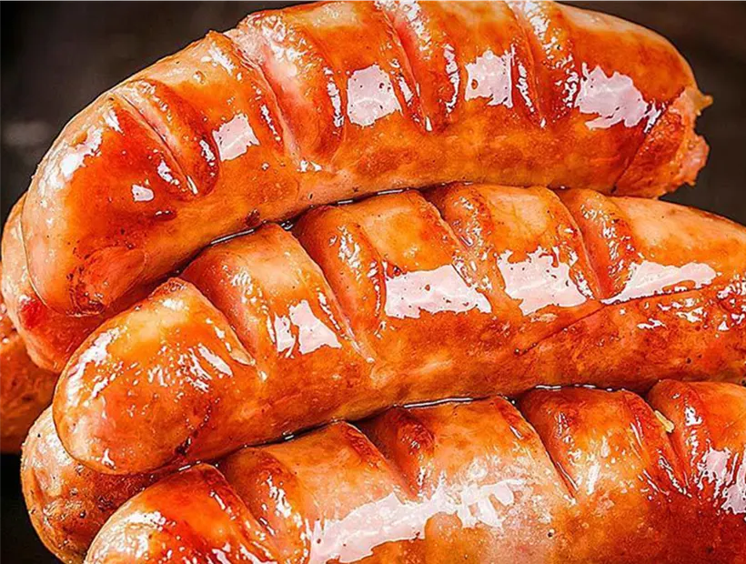
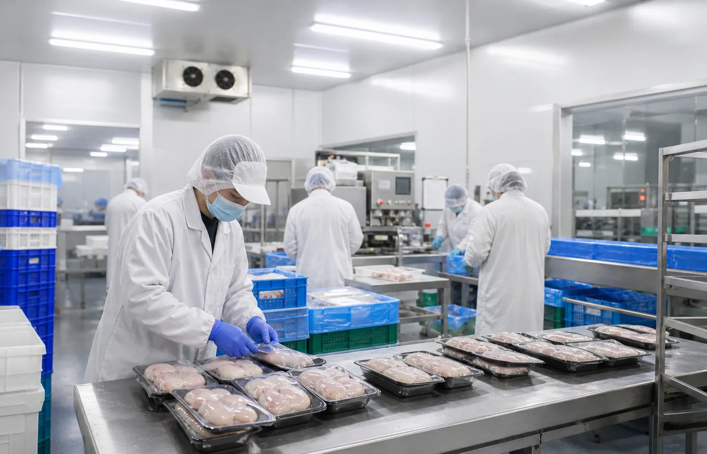
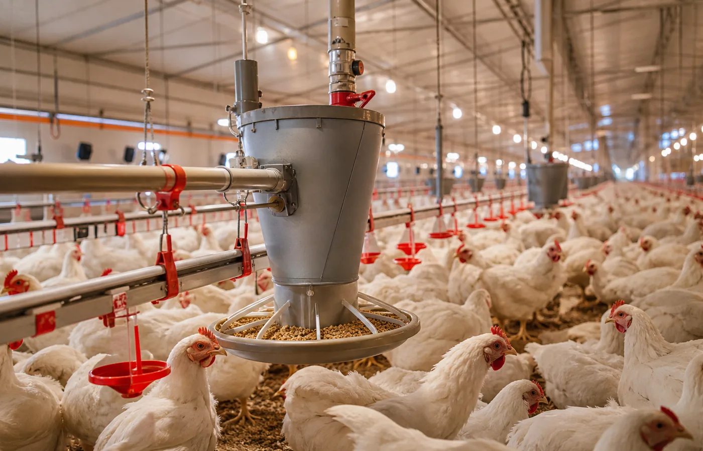

Fresh Poultry冰鮮禽肉，穩定日常出餐底盤。
冰鮮禽肉屬自家品牌 Delights Origin 系列 —— 源頭嚴選、每日冰鮮，專為茶餐廳、粵菜館、快餐品牌及中央廚房提供穩定可靠的基礎肉品。先按用量、菜式、成本及交付節奏定義規格，再以穩定渠道供應減少採購波動。
- 冰鮮雞、三黃雞、清遠雞等規格可按場景配搭
- 適合白切、蒸煮、滷水、套餐及外賣出餐
- 支援固定用量報價與批次供應安排
Product Systems
我們以自主品牌及 Food Lab 研發為核心，先建立自己的產品，再按需要延伸至餐飲客戶、即煮產品及 OEM；穩定渠道只作後台支援，協助已驗證產品放大供應。


Fresh Poultry冰鮮禽肉屬自家品牌 Delights Origin 系列 —— 源頭嚴選、每日冰鮮，專為茶餐廳、粵菜館、快餐品牌及中央廚房提供穩定可靠的基礎肉品。先按用量、菜式、成本及交付節奏定義規格，再以穩定渠道供應減少採購波動。

將醃製、調味、熟製及基礎加工前置處理，門店只需按 SOP 翻熱、切配或簡單組裝，即可保持不同分店味道一致。

由具米芝蓮餐廳經驗的廚師顧問、市場需求和最新餐飲潮流出發，建立自主品牌及獨家產品方向。

當客戶需要保密配方、品牌包裝或指定成本結構，可協助由小批試產走向穩定量產，並整理出貨、標籤及冷鏈要求。
Channel Backup
當產品需要放大，穩定渠道可支援源頭培育、分級、前置處理、冷鏈與批次交付，讓已驗證的產品穩定量產。

01 / Source按餐飲場景選定家禽畜肉規格，將穩定供應、分級標準與可追溯來源前置管理。
由基礎肉品延伸到熟製品、即煮菜式與門店規格，為客戶節省研發和備料時間。
香港團隊銜接出品標準、品牌口味與配送節奏，讓供應鏈成為可複製的後台能力。